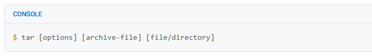
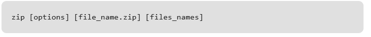
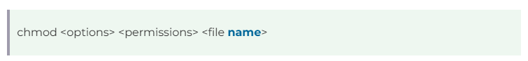

find Command
The `find` command is used to search for files and directories within a specified location in the filesystem. It can be used to search based on various criteria like name, type, permissions, and modification time.
- Root User: The root user can search the entire filesystem, including restricted directories.
- Regular User: Regular users are typically limited to searching directories they have access to, but can use the `find` command with specific parameters to refine their searches.
find Syntax

| Option | Description |
|---|---|
| -name | Search for files by name. You can use wildcards (`*`) to match patterns. |
| -type | Search for files of a specific type. Common types include `f` for regular files, `d` for directories, and `l` for symbolic links. |
| -size | Search for files by their size. You can specify the size in bytes, kilobytes (k), megabytes (M), etc. |
| -mtime | Search for files modified a certain number of days ago. You can use `+` (more than), `-` (less than), or exact numbers (e.g., `-mtime -7` for files modified in the last 7 days). |
| -user | Search for files owned by a specific user. |
| -group | Search for files belonging to a specific group. |
| -exec | Execute a command on each file found. For example, `-exec rm {} \;` will delete each file found. |
| -maxdepth | Limit the search to a certain number of directory levels. For example, `-maxdepth 2` will limit the search to two levels of directories. |
Example

tar Command
The Linux ‘tar’ stands for tape archive, which is used to create Archive and extract the Archive files. tar command in Linux is one of the important commands that provides archiving functionality in Linux. We can use the Linux tar command to create compressed or uncompressed Archive files and also maintain and modify them.
tar Command Syntax

- tar: The command itself.
- [options]: Optional flags or settings that modify the behavior of the tar command.
- [archive-file]: The name of the archive file you are creating or working with.
- [file or directory to be archived]: The file or directory you want to include in the archive.
| Options | Description |
|---|---|
| -c | Creates an archive by bundling files and directories together. |
| -x | Extracts files and directories from an existing archive. |
| -f | Specifies the filename of the archive to be created or extracted. |
| -t | Displays or lists the files and directories contained within an archive. |
| -u | Archives and adds new files or directories to an existing archive. |
Example

gzip Command
gzip command compresses files. Each single file is compressed into a single file. The compressed file consists of a GNU zip header and deflated data. If given a file as an argument, gzip compresses the file, adds a “.gz” suffix, and deletes the original file. With no arguments, gzip compresses the standard input and writes the compressed file to the standard output.
gzip Command Syntax
| Feature | Gzip | Zip |
|---|---|---|
| Compression Algorithm | Uses the DEFLATE algorithm. | Uses various compression algorithms, including DEFLATE, LZ77, and others. |
| File Format | Typically appends “.gz” to compressed files. | Uses “.zip” extension for compressed archives. |
| Archiving Approach | Common practice is to use tarball (.tar) before compression. | Compresses individual files and then adds them to the archive. |
| File Extraction | Requires decompression of the entire file before extracting specific files. | Allows direct extraction of individual files without full decompression. |
Example

gunzip Command
The gunzip command is used to decompress files that have been compressed using the gzip compression utility. It restores the original content of the compressed files by removing the .gz extension. This command is commonly used in Unix-based systems to reduce file sizes for storage or transmission, and it can handle single files or multiple files simultaneously when used with wildcards. By default, gunzip deletes the compressed file after successful decompression, but this behavior can be modified with the -c option to keep the original file.
gunzip Command Syntax
| Option | Description |
|---|---|
| -c, --stdout | Keeps original files unchanged but writes the text from a compressed file to the standard output without uncompressing it. |
| -f, --force | Forces decompression even if the conditions are not ideal. |
| -k, --keep | Keeps both the compressed and the original uncompressed file after decompression. |
| -l, --list | Provides info about compressed or uncompressed file contents. |
| -n, --no-name | Does not save the original file name and timestamp when decompressing. |
| -N, --name | Saves the original file name and timestamp when decompressing. |
| -q, --quiet | Suppresses all warnings. |
| -r, --recursive | Unzips files not only in the current directory but also in its subdirectories. |
| -S, --suffix=SUF | Uses the suffix '.suf' instead of '.gz' when decompressing. |
| --synchronous | The data is written to the output file synchronously, where each operation must be completed before the next one begins. The process is slower but considered safer in case of a system crash or failure. |
| -t, --test | Performs a test by checking the decompressed file integrity. |
| -v, --verbose | Provides a verbose output to give a better understanding of what is happening. |
| --help | Displays the help message and exits. |
| -V, --version | Shows the information about the version of gunzip. |
Example

zip Command
Zip is used to compress files to reduce file size and is also used as a file package utility. Zip is available in many operating systems like Unix, Linux, windows, etc.If you have limited bandwidth between two servers and want to transfer the files faster, then zip the files and transfer them.Compression ratios of 2:1 to 3:1 is common for text files. zip has one compression method (deflation) and can also store files without compression. zip automatically chooses the better of the two for each file to be compressed. The program is useful for packaging a set of files for distribution, archiving files, and for saving disk space by temporarily compressing unused files or directories.
zip Command Syntax

Creating Zip Syntax

| Option | Description | Syntax |
|---|---|---|
| -d | Remove files from the archive. This option allows you to remove specific files from a zip archive. After creating a zip file, you can selectively remove files using the -d option. | zip -d [file_name.zip] [files_name] |
| -u | Update files in the archive. Enables you to update files in an existing zip archive. You can specify a list of files to update or add new files. Updates only if the modified version is newer. | zip -u [file_name.zip] [files_name] |
| -m | Move files into the archive. Moves specified files into the zip archive and deletes the source files. Use cautiously as it permanently removes the input files. | zip -m [file_name.zip] [files_name] |
| -r | Recursively zip a directory. Includes all files in the specified directory and its subdirectories in the resulting zip archive. | zip -r [file_name.zip] [directory_name] |
| -x | Exclude files from the zip. Allows you to exclude specific files when zipping an entire directory. | zip -r [file_name.zip] -x [directory_name] |
| -v | Verbose mode. Provides diagnostic information during compression, including a progress indicator and details about the zip file structure. | zip -v [file_name.zip] [file_name] |
Example

chmod Command
Linux chmod command is used to change the access permissions of files and directories. It stands for change mode. It can not change the permission of symbolic links. Even, it ignores the symbolic links come across recursive directory traversal. In the Linux file system, each file is associated with a particular owner and have permission access for different users. The user classes may be:- owner
- group member
- Others (Everybody else)
The file permissions in Linux are the following three types:
- read (r)
- write (w)
- execute (x)
chmod Syntax

Permission Options
| Option | Description |
|---|---|
-R |
Apply the permission change recursively to all the files and directories within the specified directory. |
-v |
Displays a message for each file processed, indicating the permission change made. |
-c |
Works the same as -v, but only displays messages for files whose permissions are changed. |
-f |
Avoids the display of error messages. |
-h |
Changes the permissions of symbolic links instead of the files they point to. |
References
| Reference | Class |
|---|---|
| u | Owner |
| g | Group |
| o | Others |
| a | All (owner, group, others) |
Example

chown Command
The `chown` command, short for “change owner,” is a powerful tool that allows users to change the owner of files and directories. This command is particularly useful in scenarios where administrators need to grant or revoke access to specific resources.
- Root User: It is a superuser who has access to all the directories and files in our system and it can perform any operation. An important thing to note is that only the root user can perform changing of permissions or ownerships of the files that are not owned by them.
- Regular User: These users have limited access to files and directories and can only modify the files that they own.
chown Syntax
| Option | Description |
|---|---|
| -f | Suppresses all error messages except for essential usage messages. If chown encounters an error (e.g., an inaccessible file), it does not print the error message, but it continues to process other files. |
| -h | Modifies the ownership of a symbolic link rather than the target file or directory the link points to. This is useful when you want to change the ownership of a link without affecting the destination. |
| --reference=RFILE | Uses the specified reference file's (RFILE) owner and group rather than specifying the owner and group values. |
| --from=OWNER:GROUP | Changes ownership only if the file currently has the specified owner and group. The option ensures that ownership is updated only when the existing ownership matches the given values. This is useful for selective ownership changes where multiple users or groups might have access. |
| -H | When used with -R (recursive), it changes ownership of directories referenced by symbolic links on the command line and applies the change to all files inside those directories. This flag does not affect symbolic links encountered during directory traversal. |
| -L | When used with -R, it follows symbolic links to directories during recursive traversal. It changes the ownership of the directories and all files beneath them by following symbolic links. |
| -P | When used with -R, it changes ownership of symbolic links without following them. This prevents chown from modifying files or directories pointed to by the symbolic links. |
| -R | Recursively changes ownership of all files and directories beneath a specified directory. It processes each file or directory it encounters but does not follow symbolic links unless combined with -h, -H, -L, or -P. This option is crucial for applying ownership changes to entire directory trees. |
Example

chgrp Command
The `chgrp` command in Linux is used to change the group ownership of a file or directory. All files in Linux belong to an owner and a group. You can set the owner by using “chown” command, and the group by the “chgrp” command.
First we need to have administrator permission to add or delete groups. We can login as root for this purpose or use sudo. In order to add a new group, we can use:
chgrp Syntax
| Option | Description |
|---|---|
| -f, --silent, --quiet | Executes the command without displaying any error messages. |
| -v, --verbose | Outputs the action details for every file processed. |
| -c, --changes | Similar to --verbose, but reports only when making a change. |
| --dereference | Affects the referent of each symbolic link, rather than the symbolic link itself. |
| -h, --no-dereference | Affects symbolic links instead of any referenced files. Use this option only on systems that can change the ownership of a symlink. |
| --no-preserve-root | Does not treat '/' specially (default setting). |
| --preserve-root | Fails to operate recursively on '/'. |
| --reference=RFILE | Changes a file's group name to the group name of the referenced file. |
| -R, --recursive | Operates on files and directories recursively. |
| -H | If a command line argument is a symbolic link to a directory, traverses it. Used in combination with the -R option. |
| -L | In a recursive traversal, traverses every symbolic link to a directory that is encountered. Used in combination with the -R option. |
| -P | Does not traverse any symbolic links. This is the default if -H, -L, or -P aren't specified. Used in combination with the -R option. |
| --help | Displays the help file and exits. |
| --version | Outputs version information and exits. |
Example

ps Command
The `ps` command, which stands for “process status,” is like a computer tool that helps you see what’s happening inside your Linux computer. Imagine your computer is doing several things simultaneously, like running different programs or apps. These are the processes and the `ps` command lets you take a quick look at them. When you use it without any special instructions, it shows you the processes that are connected to the window or screen you are currently using. But here’s where it gets interesting: you can make the ps command show you exactly what you want to know by giving it special instructions, called options. These options let you customize the information you see, like finding out which programs are using the most computer power or checking what a specific user is doing. So, while it can give you a basic overview, the ps command’s real strength is in letting you choose exactly what details you want to see about the processes on your computer.
ps Syntax
| Option | Description |
|---|---|
| a | List all running processes for all users. |
| -A, -e | Lists all processes on the entire system, offering a complete overview of running tasks and programs. |
| -a | List all processes except session leaders (instances where the process ID is the same as the session ID) and processes not associated with a terminal. |
| -d | Lists all processes except session leaders, providing a filtered view of processes running on the system. |
| --deselect, -N | Lists all processes except those that meet specific user-defined conditions. |
| f | Displays the hierarchy of processes in a visual ASCII art format, illustrating parent-child relationships. |
| -j | Presents the output in the jobs format, providing detailed information such as process ID, session ID, and command. |
| T | Lists all processes associated with the current terminal, aiding in focusing on tasks related to a specific terminal. |
| r | Only lists running processes, useful for monitoring system performance. |
| u | Expands the output to include additional information like CPU and memory usage. |
| -u | Specifies a username, listing processes associated with that user. |
| x | Includes processes without a TTY, showing background processes not tied to a specific terminal session. |
Example